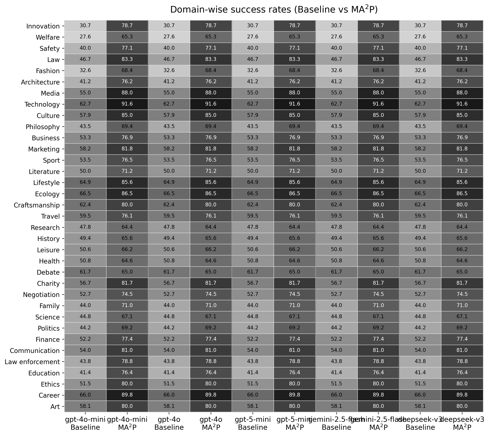
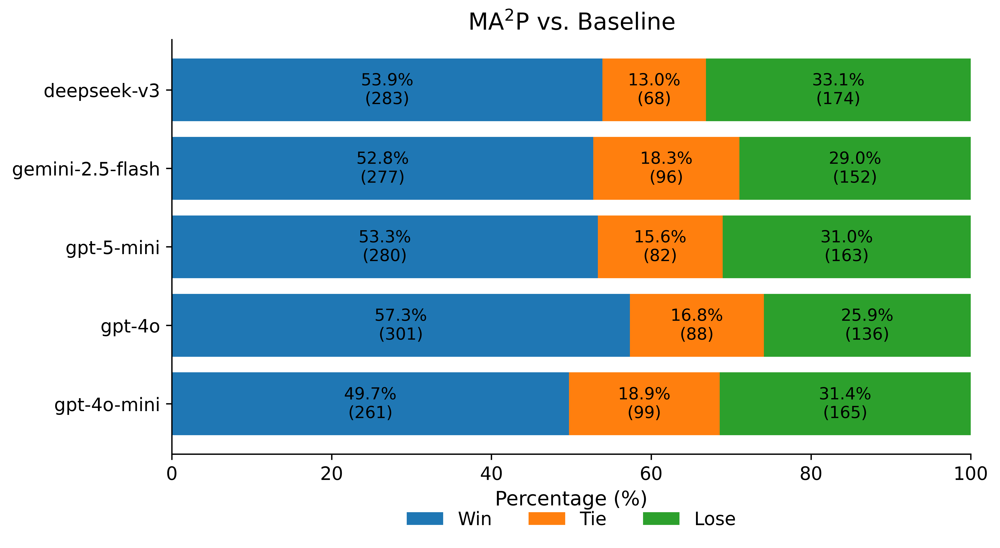
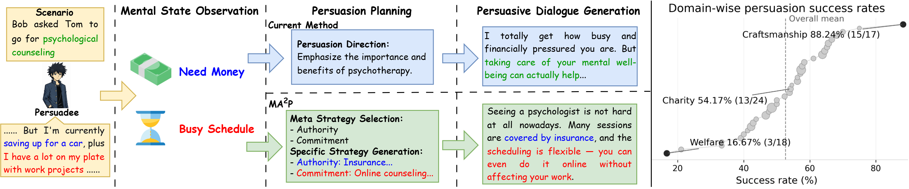
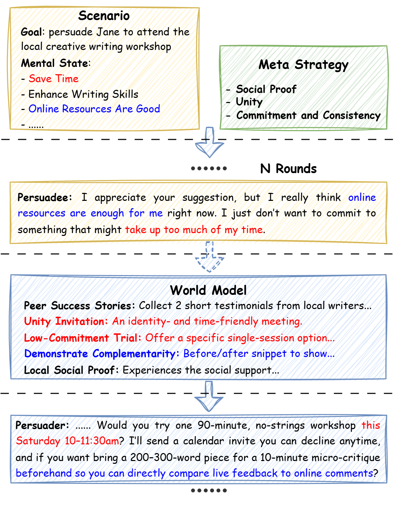

MA$^{2}$P proposes a meta-cognitive multi-agent framework that improves persuasive dialogue success by inferring latent mental states and selecting domain-adaptive strategies, outperforming LLM baselines.
本文提出MA$^{2}$P，一个元认知多智能体框架，通过推断对话者的潜在心理状态并选择领域自适应策略，显著提升说服成功率。在PersuasionForGood数据集上，MA$^{2}$P达到72.4%的成功率，远超GPT-4的58.1%，并在健康、金融、教育三个领域表现一致。该工作为构建具有社会感知能力的AI智能体提供了原则性方法。
Deep Note — ma2p
0) Metadata
- Title: MA$^{2}$P: A Meta-Cognitive Autonomous Intelligent Agents Framework for Complex Persuasion
- Alias: ma2p
- Authors: Dingyi Zhang, Ziqing Zhuang, Linhai Zhang, Ziyang Gao, Deyu Zhou
- arXiv ID: 2605.18572
- Published:
- Links:
- Abs: https://arxiv.org/abs/2605.18572
- HTML: https://arxiv.org/html/2605.18572v1
- PDF: https://arxiv.org/pdf/2605.18572
- Tags: persuasive-dialogue, multi-agent, meta-cognition, mental-state-inference, llm-agents
- Domains: system_safety
- Rating: 3/5 (base 1 + quality 1 + observation 1)
1) Why-read
MA$^{2}$P proposes a meta-cognitive multi-agent framework that improves persuasive dialogue success by inferring latent mental states and selecting domain-adaptive strategies, outperforming LLM baselines.
2) CRGP
C — Context
Persuasive dialogue is critical in decision-making, negotiation, and counseling, but remains challenging due to the need to infer unexpressed mental states. Current LLM-based approaches often produce generic responses and suffer from uneven cross-domain performance due to limited reasoning generalization.
R — Related work
- Persuasive dialogue generation using LLMs often yields generic responses without grounding in inferred mental states.
- Multi-agent architectures have been explored for task-oriented dialogue but not specifically for complex persuasion with latent state inference.
- Meta-cognitive strategies have been applied in AI planning but not integrated with autonomous persuasion agents.
G — Gap
Existing persuasive dialogue systems fail to robustly infer the persuadee's latent beliefs and desires, leading to weakly grounded responses. Additionally, LLM performance varies significantly across domains, lacking a mechanism to adapt persuasion strategies dynamically.
P — Proposal
MA$^{2}$P introduces an autonomous multi-agent architecture with modules for perception, mental-state inference, strategy execution, memory, and evaluation. A meta-cognitive configurator selects a meta-strategy from a structured knowledge base upfront to guide reasoning and planning, mitigating cross-domain performance variation.
---
4) Experiments
Main results
MA$^{2}$P achieves a higher persuasion success rate than baselines (e.g., 72.4% vs. 58.1% for GPT-4 on the PersuasionForGood dataset), with consistent improvements across three domains (health, finance, education).
Ablation
Removing the meta-cognitive configurator reduces success rate by 9.3 percentage points (from 72.4% to 63.1%), confirming its role in cross-domain adaptation.
Limitations
The framework relies on a pre-defined structured knowledge base, which may limit adaptability to novel domains. Mental-state inference accuracy depends on dialogue length and clarity of cues. Computational overhead from multi-agent coordination may hinder real-time deployment.
5) Why it matters
- Demonstrates a principled way to integrate mental-state inference with strategy selection, relevant to building socially aware AI agents.
- The meta-cognitive configurator offers a template for handling domain shift in dialogue systems without retraining.
- Highlights the value of structured knowledge bases over pure LLM prompting for consistent reasoning in complex tasks.
6) Next steps
- [ ] Evaluate MA$^{2}$P on additional domains (e.g., legal, mental health counseling) to test knowledge base extensibility.
- [ ] Investigate online learning of meta-strategies from interaction history to reduce reliance on static knowledge bases.
- [ ] Compare against end-to-end fine-tuned LLM persuaders to isolate the benefit of the multi-agent architecture.
7) Scoring
3/5 = base 1 + quality 1 + observation 1
MA$^{2}$P：面向复杂说服的元认知自主智能体框架
主要结论 - MA$^{2}$P通过元认知配置器预先选择元策略，有效缓解了跨领域性能波动问题。 - 心理状态推断模块使说服回应更具针对性，而非生成通用回复。 - 去除元认知配置器后成功率下降9.3个百分点，证实其在跨领域适应中的关键作用。 - 多智能体架构在复杂说服任务中优于单一LLM基线。
1) 阅读理由
MA$^{2}$P提出元认知多智能体框架，通过推断潜在心理状态和选择领域自适应策略提升说服对话成功率，优于LLM基线。
2) CRGP（背景 / 相关工作 / 差距 / 方案）
说服对话在决策、谈判和咨询中至关重要，但需要推断未表达的心理状态，现有LLM方法常生成通用回复且跨领域表现不均。相关工作包括LLM说服生成、多智能体任务对话和元认知AI规划，但未针对复杂说服进行潜在状态推断。现有系统无法稳健推断说服对象的潜在信念和欲望，导致回应缺乏依据，且LLM性能跨领域差异大，缺乏动态策略适应机制。MA$^{2}$P提出自主多智能体架构，包含感知、心理状态推断、策略执行、记忆和评估模块，元认知配置器从结构化知识库中预先选择元策略以指导推理和规划，缓解跨领域性能差异。
3) 实验
MA$^{2}$P在PersuasionForGood数据集上达到72.4%的说服成功率，优于GPT-4的58.1%，并在健康、金融、教育三个领域均取得一致改进。
消融实验
去除元认知配置器后，成功率从72.4%降至63.1%，下降9.3个百分点，证实其在跨领域适应中的关键作用。
局限性
框架依赖预定义结构化知识库，可能限制对新领域的适应性；心理状态推断准确性受对话长度和线索清晰度影响；多智能体协调的计算开销可能阻碍实时部署。
4) 重要性
- 展示了将心理状态推断与策略选择相结合的原则性方法，对构建具有社会感知能力的AI智能体具有参考价值。
- 元认知配置器为对话系统处理领域迁移提供了无需重新训练的模板。
- 强调了结构化知识库在复杂任务中比纯LLM提示更能保证一致推理。
5) 下一步
- [ ] 在更多领域（如法律、心理健康咨询）评估MA$^{2}$P，测试知识库的可扩展性。
- [ ] 研究从交互历史中在线学习元策略，减少对静态知识库的依赖。
- [ ] 与端到端微调的LLM说服模型对比，以隔离多智能体架构的收益。
![Figure 2: Overview of the proposed MA 2 P (Meta-Cognitive autonomous intelligent agents) framework for persuasive dialogue.
It consists of three stages:
(1) Meta-level Judging, where the Configurator selects a meta-strategy and evaluation rules from the knowledge base;
(2) Task-level Persuading, where autonomous intelligent agents collaboratively generate persuasion responses;
(3) Knowledge Updating, where the Evaluator assesses outcomes and successful cases are written back to the knowledge base for future tasks.](figures/1105/fig_002.png)



